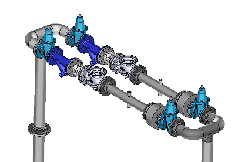
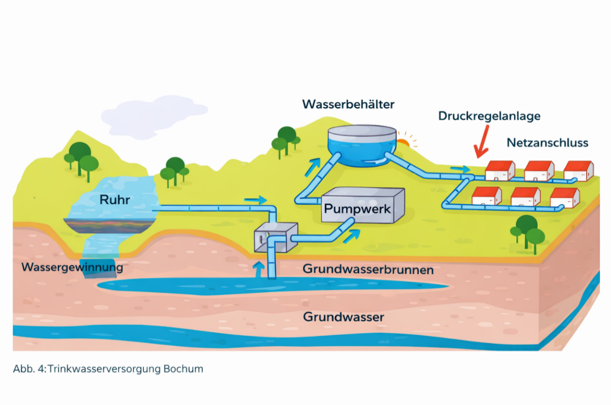
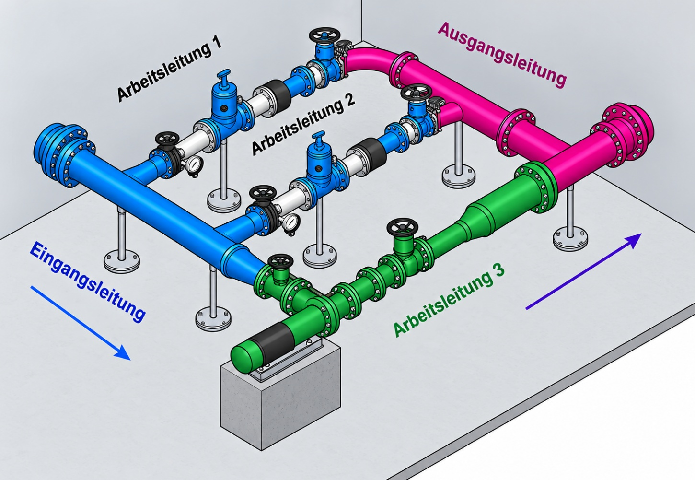

Die Herausforderung
Druckregelung ist für die sichere Wasserversorgung notwendig. Die dabei abgebaute Energie soll besser genutzt werden.
Umbau und Optimierung der Trinkwasserdruckregelanlage Neuer Kamp für die elektrische Energierückgewinnung.

In Trinkwassernetzen muss der Wasserdruck zwischen verschiedenen Versorgungszonen reduziert werden. Unser Projekt untersucht, wie sich die bislang ungenutzte Druckenergie an der Anlage Neuer Kamp mithilfe einer Wasserturbine zur Stromerzeugung nutzen lässt.
Das Konzept entsteht im Rahmen der Weiterbildung zum staatlich geprüften Techniker, Fachrichtung Maschinenbautechnik, an der TBS1 Bochum.
Mehr zum Projekt →
Schematische Darstellung der Trinkwasserversorgung aus der Projektdokumentation.
Druckregelung ist für die sichere Wasserversorgung notwendig. Die dabei abgebaute Energie soll besser genutzt werden.
Untersuchung einer Wasserturbine zur Energierückgewinnung unter Berücksichtigung der Anforderungen an die Anlage.
Drei angehende Maschinenbautechniker verbinden Konstruktion, Fertigung und Verfahrenstechnik.
Vom Ist-Zustand über verschiedene Lösungsansätze bis zur wissenschaftlichen Bewertung dokumentieren wir den Weg zu einem tragfähigen Konzept.
Technische Entwicklung →
CAD-Darstellung einer untersuchten Anlagenvariante.